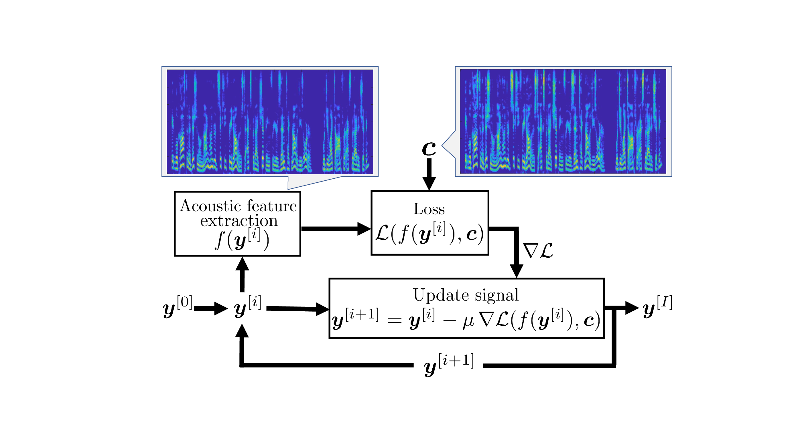
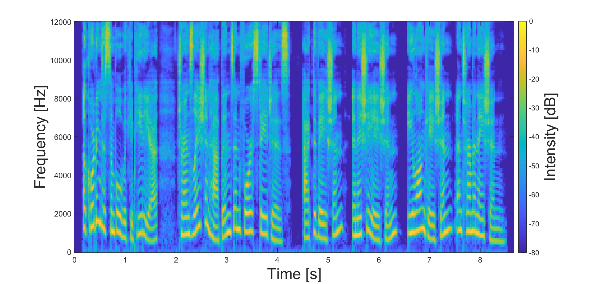
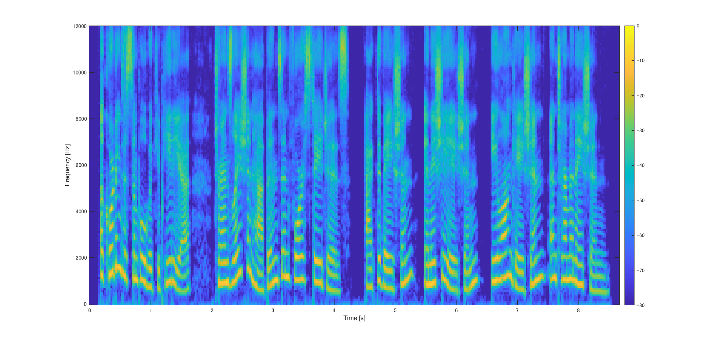
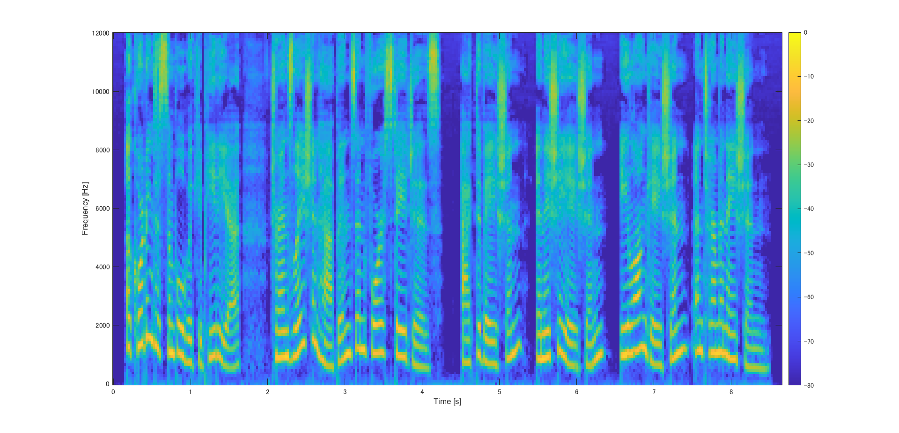

Abstract:Neural vocoders have fundamental trade-off between the sound quality of generated speech signals and their computational time. To overcome this trade-off, a lot of neural vocoders have been proposed in the literature. However, each neural vocoder has been developed based on a technique specific to it, and hence a promising method for one neural vocoder may not be effective for another neural vocoder. Considering this situation, we propose a post-processing method that can be combined with any neural vocoder for improving the sound quality of generated speech signals. The proposed method iteratively refines speech signals so that their sound characteristics become closer to those given by the conditioning acoustic features. Our objective and subjective experiments showed that the proposed method can improve the sound quality of speech signals generated by several different neural vocoders.

Contents:
Effect on DDPM-based model output samples
Effect on GAN-based model output samples of LJSpeech
Effect on GAN-based model output samples of LibriTTS
Visual observation of the effect of the proposed method
Effect on DDPM-based model output samples:
Note: We used the test signals of SpecGrad [1], WaveGrad [2], and PriorGrad [3] used in the SpecGrad paper [1].
| Example 1 |
Example 2 |
Example 3 |
||
| Ground-truth | ||||
| SpecGrad [1] | Generated | |||
| Applied Prop. | ||||
| WaveGrad [2] | Generated | |||
| Applied Prop. | ||||
| PriorGrad [3] | Generated | |||
| Applied Prop. | ||||
Effect on GAN-based model output samples of LJSpeech:
Note1: Output samples of HiFi-GAN [4], MelGAN [5],and Parallel WaveGAN [6] were downloaded from Dr. Tomoki Hayashi's unofficial implementations.
Note2: The list of output sample's names used in the subjective test on the LJSpeech dataset [7] is
here
.
| Example 1 (LJ050-0100) |
Example 2 (LJ050-0173) |
Example 3 (LJ050-0245) |
||
| Ground-truth | ||||
| HiFi-GAN [4] | Generated | |||
| Applied Prop. | ||||
| MelGAN [5] | Generated | |||
| Applied Prop. | ||||
| Parallel WaveGAN [6] | Generated | |||
| Applied Prop. | ||||
Effect on GAN-based model output samples of LibriTTS:
Note1: Output samples of HiFi-GAN [4], MelGAN [5],and Parallel WaveGAN [6] were downloaded from Dr. Tomoki Hayashi's unofficial implementations.
Note2: The list of output sample's names used in the subjective test on the LibriTTS dataset [8] is
here
.
| Example 1 (1188_133604_000011_000003) |
Example 2 (1089_123859_000017_000001) |
Example 3 (121_127105_000043_000002) |
||
| Ground-truth | ||||
| HiFi-GAN [4] | Generated | |||
| Applied Prop. | ||||
| MelGAN [5] | Generated | |||
| Applied Prop. | ||||
| Parallel WaveGAN [6] | Generated | |||
| Applied Prop. | ||||
Visual observation of the effect of the proposed method:
The effect of the proposed method on the speech signal can be visually observed using log-mel spectrograms.
Ground-truth
The log-mel spectrograms of the speech signal before and after applying the proposed method are as follows:
Generated speech signal by WaveGrad[2]  |
Signal applied Proposed method  |
References:
[1] Y. Koizumi, H. Zen, K. Yatabe, N. Chen, and M. Bacchiani, “SpecGrad: Diffusion Probabilistic Model based Neural Vocoder with Adaptive Noise Spectral Shaping,” in Proc. Interspeech, 2022. [paper]
[2] N. Chen, Y. Zhang, H. Zen, R. J. Weiss, M. Norouzi, and W. Chan, “WaveGrad: Estimating Gradients for Waveform Generation,” in Proc. ICLR, 2021. [paper]
[3] S. Lee, H. Kim, C. Shin, X. Tan, C. Liu, Q. Meng, T. Qin, W. Chen, S. Yoon, and T. Y. Liu, "PriorGrad: Improving Conditional Denoising Diffusion Models with Data-Dependent Adaptive Prior," in Proc. ICLR, 2022. [paper]
[4] J. Kong, J. Kim, and J. Bae, "HiFi-GAN: Generative Adversarial Networks for Efficient and High Fidelity Speech Synthesis," in Proc. NeurIPS, 2020. [paper]
[5] K. Kumar, R. Kumar, T. de Boissiere, L. Gestin, W. Z. Teoh, J. Sotelo, A. de Brébisson, Y. Bengio, and A. C. Courville, "MelGAN: Generative Adversarial Networks for Conditional Waveform Synthesis," in Proc. NeurIPS, 2019. [paper]
[6] R. Yamamoto, E. Song, and J.-M. Kim, "Parallel WaveGAN: A Fast Waveform Generation Model based on Generative Adversarial Networks with Multi-Resolution Spectrogram," in Proc. ICASSP, 2020. [paper]
[7] K. Ito and L. Johnson, "The LJ Speech Dataset," 2022.[site]
[8] H. Zen, V. Dang, R. Clark, Y. Zhang, R. J. Weiss, Y. Jia, Z. Chen, and Y. Wu, "LibriTTS: A Corpus Derived from LibriSpeech for Text-to-Speech," in Proc. Interspeech, 2019. [paper]
[9] Y. Koizumi, K. Yatabe, H. Zen, and M. Bacchiani, "WaveFit: An Iterative and Non-Autoregressive Neural Vocoder Based on Fixed-Point Iteration," in Proc. SLT, 2023. [paper]